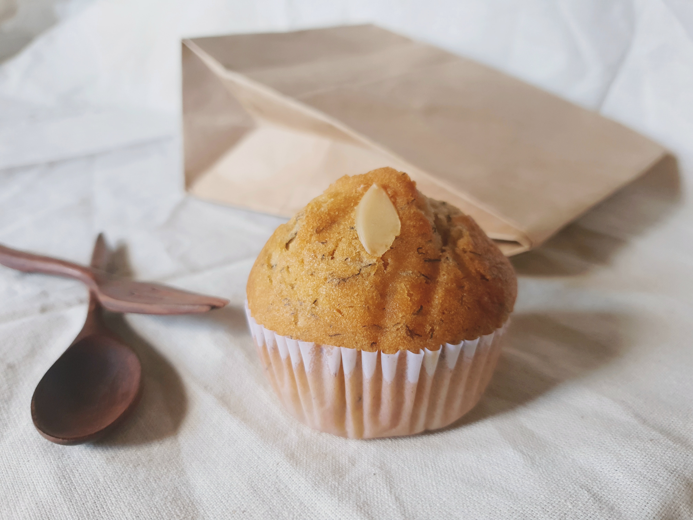

Muffin

Savory Cheddar Zuchhini Muffins
Cheddar Zuchini Muffins - the perfect complement with chicken dinner.
Ingredients
- 1 3/4 cups all-purpose flour
- 1 1/2 teaspoons baking powder
- 1 teaspoon baking soda
- 1/2 teaspoon salt
- 1/4 cup butter, melted
- 1 egg, lightly beaten
- 1 cup milk
- 1 cup shredded unpeeled zuccchini
- 1 clove garlic, minced
- 3/4 cup shredded Cheddar cheese
- 1/4 cup freshly grated Parmesan cheese
- 4 slices bacon, cooked crisp and crumbled
Steps
- Preheat oven to 350 degrees F (175 degrees C). Spray 12 muffin cups with cooking spray
- Mix the flour, baking powder, baking soda, and salt in a bowl
- In a separate bowl, stir butter, egg, milk, zucchini, and garlic. Blend well.
- Mix flour into the milk mixture at 1/2 cup increments, stirring between additions.
- Fold in the Cheddar cheese, Parmesan cheese, and crumbled bacon. Pour the batter into the prepared muffin cups.
- Bake in the preheated oven until a toothpick incerted into the center of a muffin comes out clean (30 to 35 minutes).
- Allow muffins to cool slightly before removing from muffin cups; serve warm.
Return home